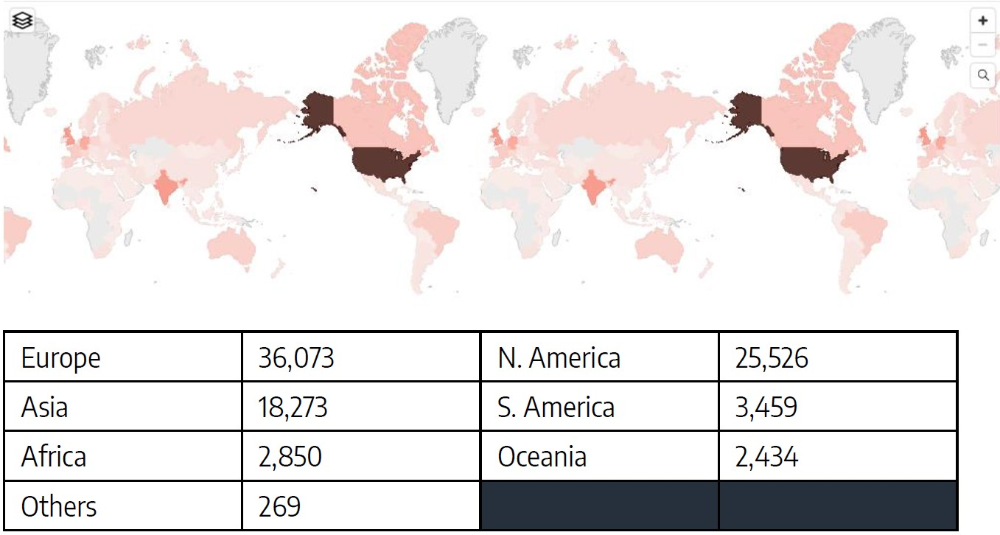
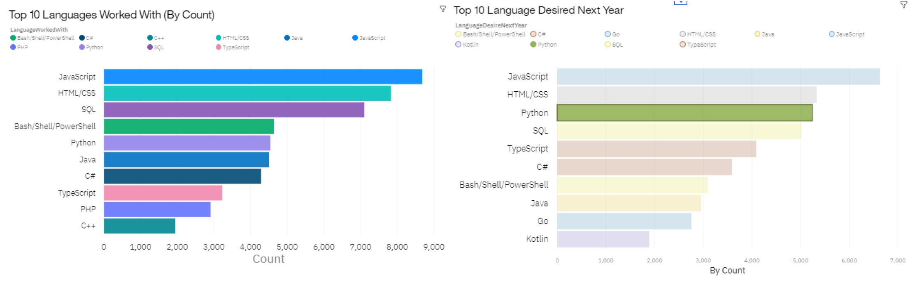
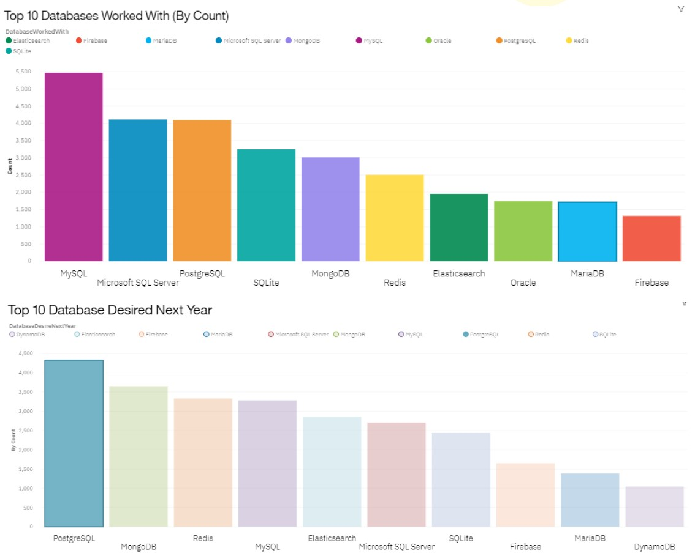
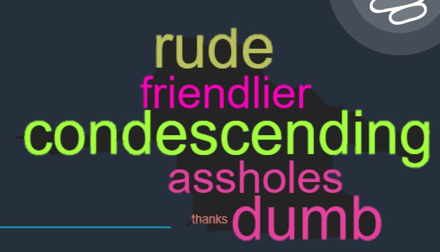

Analysis on Programming Trends

Summary
This was my very first guided project from Coursera's IBM Data Analyst Professional Certificate course. In this study, a survey of 90,000 respondents was conducted in 2019 by StackOverflow, collecting data such as their experience, compensation, languages learnt and as well as demographic data. The project was open-ended to students, meaning that we were free to choose our own questions to answer. I chose to answer the following questions:
- Given the rising demand for programming expertise, are there factors hindering this growth?
- What are the most popular programming languages in the market?
Through the survey, some of the key findings were:
- Python is the fastest growing language & has risen in ranks; edging out Java standing as the 3d most sought after language.
- Postgre SQL is growing to be the most sought after database.
- 80% of the respondents code as a hobby, & 85% self taught programming without taking a formal course.
- Data science still appears to be a male led industry with over 90% of respondents being male.
- Females reported that users on Stack Overflow were generally condescending and rude towards them.
The deck can be found here, and the code here.
Methodology
Demographics
A survey response of 88, 883 respondents were gathered from 179 countries. 400 responses were deemed invalid as less than 3 minutes were spent on them. Respondents were recruited mainly via onsite messaging, blog posts, email lists, Meta posts, banner ads and social media posts. The average time to complete the survey was 23 minutes, with 72.4% of the respondenments finding the survey easy to follow. For the purpose of this report, respondents who marked multiple gender orientation were not included for consistency.

Popular Languages
Python is the fastest growing language & has risen in ranks; edging out Java standing as the 3 rd most sought after language.

Popular Databases
Postgre SQL is growing to be the most sought after database, rising to the top #1.

Discrimination?
As the industry is heavily male-led (approximately 90% of the respondents were male), it led to a resentment among female programmers. Who felt that they were being discriminated against, and that their experiences on Stack Overflow were mostly negative.
Implication & Conclusion
As technological roles continues to grow in demand, it may outstrip supply and result in a shortage of talent despite the increased compensation package. Not receiving formal education in the field of science may also contribute to the supply & demand disparity. However, further analysis is needed to compare the effectiveness of formal education vs coding as a hobby / self taught.Other factors, such as discrimination may cause female programmers to shy away from programming, in fear of cyber bullying as generally solutions / aid are sought there.
In conclusion, the lack of formal education, demand for a certain language & gender discrimination among the online community are possible factors that widens the gap between supply & demand.
Thoughts
More can be done to create a safe, inclusive environment for individuals to explore this amazing field of technology. For example, there is evidence of toxic behaviour in the community, however moderators are not able to keep up with the volume of posts. Perhaps, a more effective way to tackle this issue is to create a safe space for individuals to learn and grow, without the fear of being judged. I.e., users can join an interest group, where they can ask questions and receive help from other members, rather than a public post. Data camps and extra curriculum activities can be progressively introduced into schools for students to explore the field of technology. This will help to create a more inclusive environment for individuals to explore their interests.
Perhaps one day, coding might even be a GCE O' Level subject, who knows?